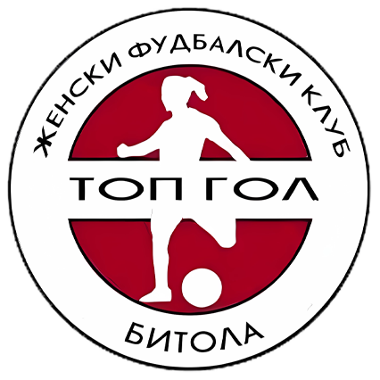

Liga e Parë e Femrave 17/18
| Poz. | Ekipi | N | F | B | H | GSh | GP | GD | P. |
|---|---|---|---|---|---|---|---|---|---|
| 1 |
 Brera Tiverija
Brera Tiverija
|
20 | 19 | 0 | 1 | 131 | 10 | 121 | 57 |
| 2 |
 Skopje 2014
Skopje 2014
|
18 | 17 | 0 | 1 | 117 | 10 | 107 | 51 |
| 3 |
 Atletiko
Atletiko
|
18 | 14 | 0 | 4 | 82 | 39 | 43 | 42 |
| 4 |
 Borec
Borec
|
16 | 10 | 0 | 6 | 60 | 41 | 19 | 30 |
| 5 |
 AS United
AS United
|
14 | 8 | 1 | 5 | 43 | 31 | 12 | 25 |
| 6 |  Top Gol | 22 | 7 | 2 | 13 | 46 | 74 | -28 | 23 |
| 7 |
 Istatov
Istatov
|
12 | 7 | 1 | 4 | 49 | 45 | 4 | 22 |
| 8 |
 Rečica
Rečica
|
20 | 5 | 2 | 13 | 33 | 50 | -17 | 17 |
| 9 |
 Tetova 2017
Tetova 2017
|
16 | 5 | 0 | 11 | 31 | 91 | -60 | 15 |
| 10 |
 Kočani
Kočani
|
18 | 4 | 2 | 12 | 44 | 71 | -27 | 14 |
| 11 |
 Kamenica Sasa
Kamenica Sasa
|
17 | 1 | 2 | 14 | 12 | 92 | -80 | 5 |
| 12 |
 Fk Baškimi Ljuboten/Žfk
Fk Baškimi Ljuboten/Žfk
|
13 | 0 | 0 | 13 | 7 | 101 | -94 | 0 |